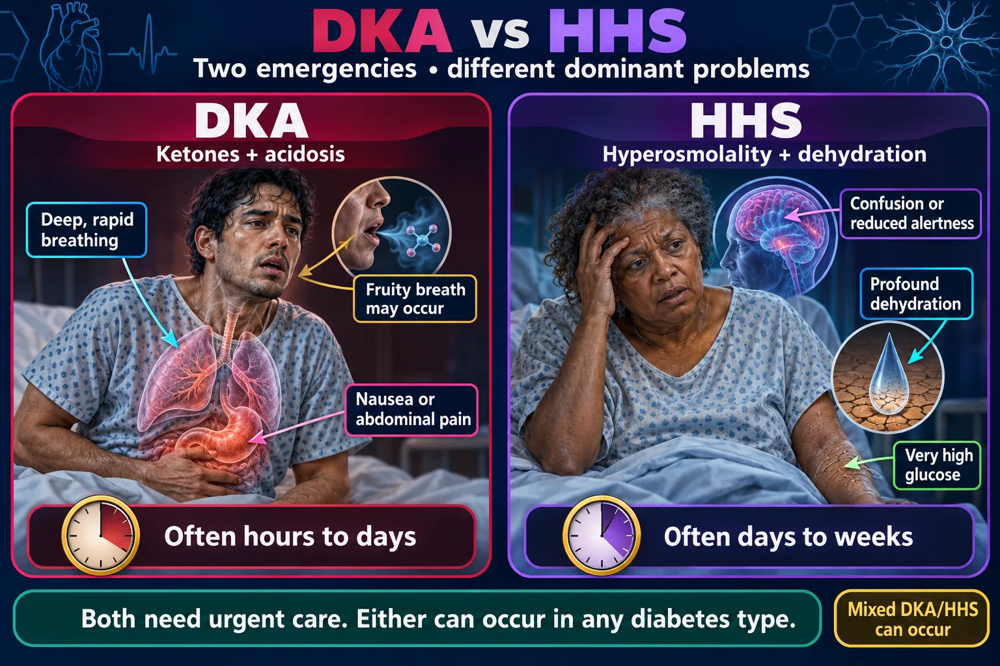
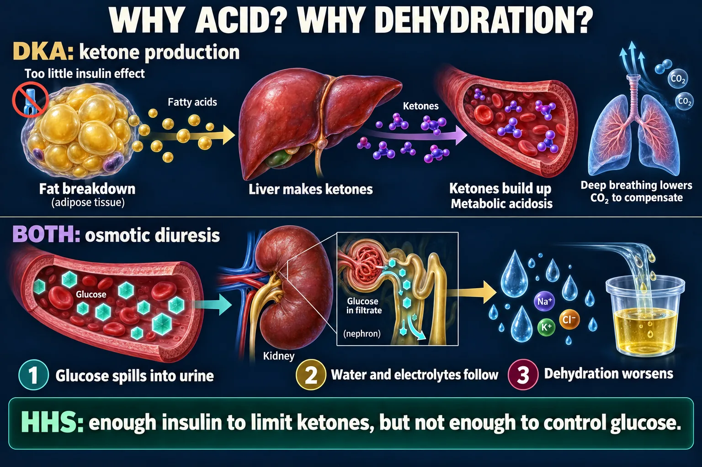
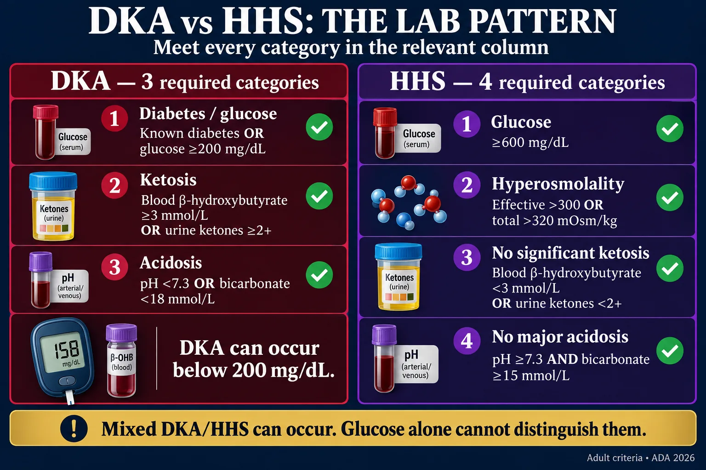
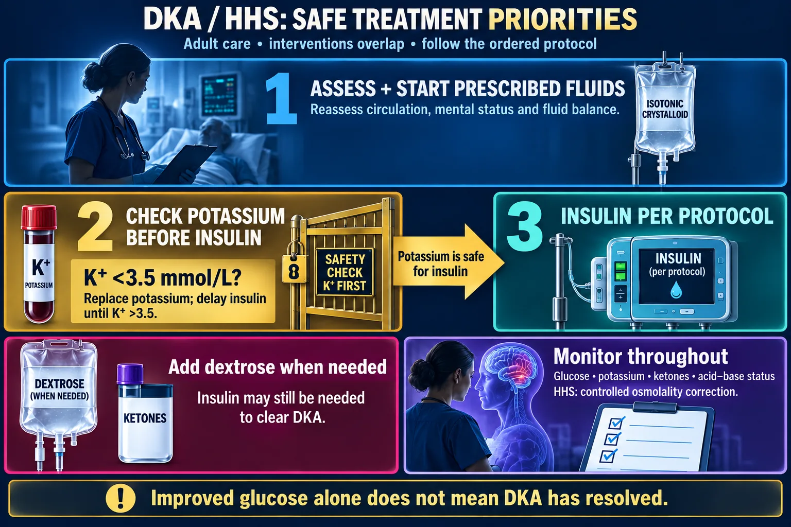
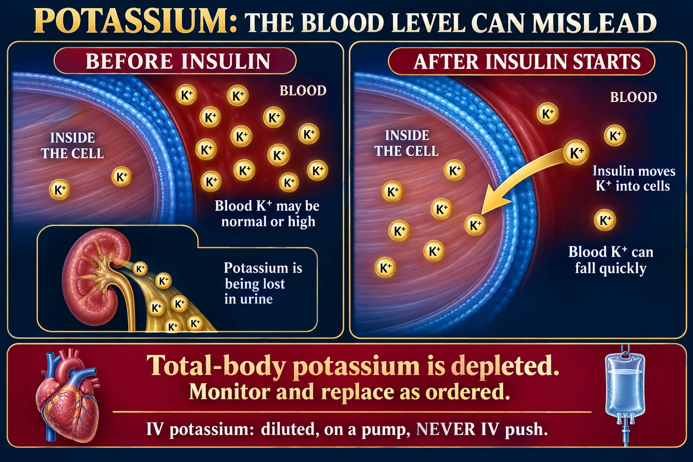

DKA: all three categories
- Diabetes/glucose: known diabetes OR glucose ≥200 mg/dL.
- Ketosis: blood β-hydroxybutyrate ≥3 mmol/L OR urine ketones ≥2+.
- Acidosis: pH <7.3 OR bicarbonate <18 mmol/L.
Two hyperglycemic emergencies · same treatment order · completely different pictures
DKA = diabetic ketoacidosis. HHS = hyperosmolar hyperglycemic state (older texts: HHNS/HHNK). Both are hyperglycemic crises, both are usually triggered by infection, and both are treated in the same order — fluids, then insulin, and potassium the whole way through. What differs is the speed, the ketones, and how sick the numbers get. Background patho lives on NG-290; day-to-day management on NG-292.
Look at the patient before you look at the chart. DKA breathes at you. HHS stops making sense.

DKA emphasizes ketones and acidosis; HHS emphasizes hyperosmolality and dehydration.
🔍 Open full-size image🖼️ Shown in the picture: DKA vs HHS: two clinical patterns ↑
| DKA | HHS (HHNS) |
|---|---|
| Usually type 1 (can occur in type 2 under severe stress) | Usually type 2, often previously undiagnosed |
| Younger, onset over hours to a day | Older, onset over days to weeks |
| Glucose typically 250–500+ mg/dL — moderately high | Glucose typically > 600 mg/dL — profoundly high |
| Ketones present (blood/urine), fat is being burned | No significant ketones — enough insulin remains to block lipolysis |
| Metabolic acidosis, pH < 7.35, low bicarbonate, anion gap raised | pH essentially normal, bicarbonate near normal |
| Kussmaul respirations + fruity/acetone breath | Breathing normal, no characteristic odor |
| Abdominal pain, nausea, vomiting are prominent | Abdominal pain uncommon — think again if it's there |
| Mental status often preserved until late | Neurological change dominates — lethargy, confusion, focal signs, seizures, coma |
| Dehydration significant | Dehydration extreme — serum osmolality very high, fluid deficit larger |
| Potassium: serum may look normal or high while total body K⁺ is depleted | Potassium usually closer to normal initially, but still depleted overall |
| Generally the easier fix once treated | Higher mortality — older, sicker, more comorbidity, harder to reverse |
🖼️ Shown in the picture: DKA vs HHS: two clinical patterns ↑
Answer first: a little insulin is enough to stop ketones but not enough to control glucose.
In type 2 there is still residual insulin, so fat breakdown is suppressed and ketones never build. Without acidosis there is no Kussmaul breathing and no fruity breath — so nothing dramatic happens to make the patient seek help. They keep drinking, keep urinating, and dry out for days until the glucose is astronomical and the brain finally stops working.
No insulin → the cell can't use glucose → the body burns fat → fat burning makes ketone acids → the blood turns acidic → Kussmaul breathing tries to blow the acid off.

Follow the fat-to-liver pathway and the kidney-to-urine pathway.
🔍 Open full-size imageDeep, rapid, regular, labored breathing. Not gasping, not irregular — a machine-like hyperventilation.
It is respiratory compensation: blowing off CO₂ (a volatile acid) is the fastest way the body has to raise a falling pH. If Kussmaul breathing suddenly slows in a patient who is still acidotic, that is exhaustion, not improvement — escalate immediately.
Glucose above the renal threshold (roughly 180 mg/dL) spills into urine and drags water and electrolytes with it. Days of this = liters of deficit.
🖼️ Shown in the picture: Why ketones and dehydration develop ↑
Four labs sort these two apart: glucose · ketones · pH/bicarb · osmolality. Potassium is the one that will hurt you.

Check the whole pattern; one glucose result is not enough.
🔍 Open full-size imageDKA can occur with glucose below 200 mg/dL, including with SGLT2 inhibitors. Mixed DKA/HHS needs protocol-based assessment. These are adult criteria.
The order is the answer. Fluids → check K⁺ → insulin, with potassium alongside → dextrose when the sugar comes down.

Check potassium before insulin; care and monitoring overlap.
🔍 Open full-size image🖼️ Shown in the picture: Safe treatment priorities ↑
"The child is nauseated and not eating — do we still give insulin?" YES.
Illness raises blood glucose through stress hormones. Withholding insulin because the patient isn't eating is exactly how type 1 patients arrive in DKA. Doses may be adjusted, glucose and ketones are checked more often, and carbohydrate-containing fluids are used if they cannot eat — but the insulin does not stop.
Insulin drives potassium into the cell. Start a drip on a depleted patient without watching the K⁺ and you can stop the heart.

Insulin shifts potassium into cells while total-body stores may already be depleted.
🔍 Open full-size imageAnswer first: if the potassium is too low, hold the insulin and replace the potassium first. Many protocols use a threshold around 3.3 mEq/L — know that your facility has a number and that insulin waits for it. The typical adult reference range for serum potassium is ≈ 3.5–5.0 mEq/L, and ranges vary by laboratory.
| DKA | HHS |
|---|---|
| Electrolyte and acid–base catastrophe — most classically a potassium crash during treatment causing lethal arrhythmia, plus cerebral edema if the glucose is dropped too fast | Profound hypovolemia — shock, renal failure, thromboembolism, and the underlying illness that started it |
Also watch in both: the precipitating infection, aspiration in an obtunded patient, and fluid overload in patients with heart or kidney disease.
From Codex’s 7 Oct review, sources checked that day. For tests and NCLEX-style questions, answer the way your textbook teaches.
Foundations: NG-290 — Diabetes. Ongoing management, sick-day rules and hypoglycemia rescue: NG-292 — Diabetes II. Insulin pharmacology: NG-224 — NCLEX Drugs 8 · Insulins (open). Steroids as a trigger: NG-288.